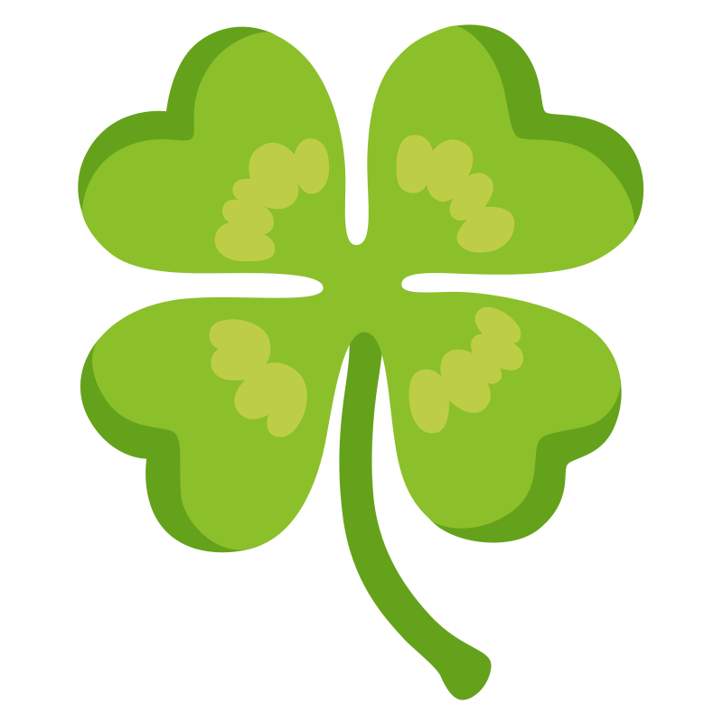
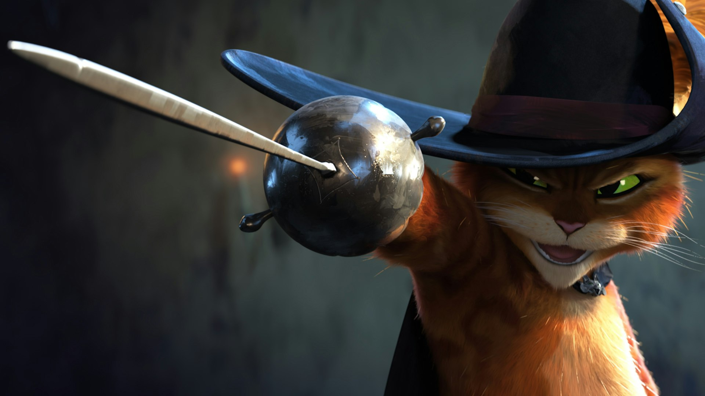

 The Four Musketeers
We are the four musketeers: The strongest, smartest and intelligent team in the histrory of ADA.
You are currently in the main page of the website. You may find information abour our team and its glorious history. In the Web Project tab, you may find information about this website, its design and code structure. In the Team Members page, there is the informationa bout our brigade members: Yusif Mehdiyev, Ilham Hajiyev, Samira Yusifova, Nurlan Guluzada. You may also want to learn about our Hour of Code event, where we taught and trained future soldiers for our cause.
Why Four Musketeers?
You might have heard about the famous literature "Three Musketeers". However, in the novel there were in fact 4 musketeers. The novel talks about these four main characters' history journey, honor and friendship between them. This is just our team but in modern time, so it was a perfect name choice for our "brigade".
What is that logo?
The logo is a Four-leaf clover. According to the traditional literature, these kind of clovers bring luck and success. Since our central idea is about four people, a four-leaf clover would (in fact, it does) look cool. This is our reason of our choice.
>